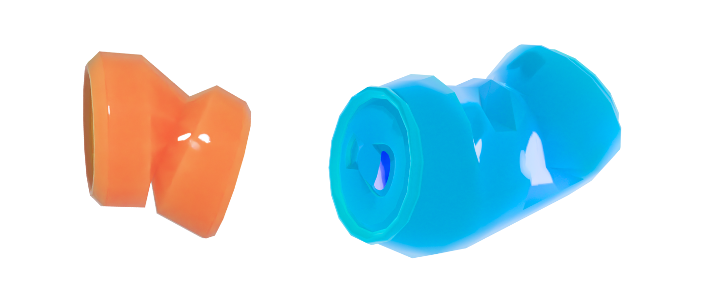

Устранение жестяных банок

Факты:
Название
Жестяные банки
Сложность переработки
Легкая
К чему устойчивы
К коррозии
Важно!
* Жестяные банки могут быть 100% переработаны бесконечное
количество раз без потери качества.
Жестяные банки
Жестяные банки широко используются в упаковке напитков, но
в то же время являются одним из наиболее негативных
элементов с точки зрения воздействия на окружающую среду.
Они могут быть переработаны и повторно использованы,
что сделает их утилизацию более экологически безопасной.
Негативные свойства
Негативные свойства жестяных банок связаны с тем, что они
не разлагаются в природе и могут наносить серьезный
вред окружающей среде. Кроме того, при производстве жестяных
банок требуется большое количество энергии и ресурсов,
что тоже оказывает отрицательное воздействие на окружающую
среду.
Что с ними делать?
Одним из способов утилизации жестяных банок является их
переработка и повторное использование. После сбора
и переработки банки могут быть использованы для производства
новых изделий, что позволяет сократить количество отходов
и ресурсов, затрачиваемых на производство новых банок.
Также жестяные банки можно отдавать на переработку
в специальные пункты приема, которые есть во многих
городах.
МЫ В СОЦ СЕТЯХ